Unit vocabulary
Every term taught in the unit, lesson by lesson, with the photos and diagrams the lessons use to show them.
Earning money (Lessons 1–3)
Lesson 1 · Ways of earning money
- income Money a person receives, for example from working
- wage Pay worked out as hours worked × hourly rate also Lesson 2
- hourly rate The amount paid for each hour of work also Lesson 2
- salary A set amount of pay for a year, paid in equal parts (for example weekly or monthly)
- per annum (p.a.) Per year also Lesson 3
- commission Pay that is a percentage of the value of what a person sells
- retainer A set amount paid each week on top of commission, whatever the sales
- piecework Pay for each item produced or each task completed
- royalty A payment to the creator of a book, song or other work each time it is sold or used
Photo credits:
- wage: "Barista making coffee", rawpixel, CC0 1.0. https://www.rawpixel.com/image/5904500/photo-image-public-domain-person-kitchen
- salary: "Irene's office, across the asile [sic] from me" by wbaiv, CC BY-SA 2.0. https://www.flickr.com/photos/9998127@N06/5833123954
- commission: "House For Sale, Real Estate SOLD sign" by myguys.nova, CC BY 2.0. https://www.flickr.com/photos/124808053@N07/14683431173
- piecework: "Aunties Lay Leong, Susan and Julie with buckets of cherries" by avlxyz, CC BY-SA 2.0. https://www.flickr.com/photos/10559879@N00/2079822283
- royalty: "Books" by NeilGHamilton, CC BY 2.0. https://www.flickr.com/photos/34800120@N08/6819921489
Lesson 2 · Overtime and penalty rates
- shift One block of hours worked in a day
- overtime Hours worked beyond a worker's normal hours, usually paid at a higher rate
- penalty rate A higher rate paid for working at times such as weekends, public holidays or late at night
- multiplier The number the base rate is multiplied by, for example × 1.5 or × 2
- time and a half Base rate × 1.5
- double time Base rate × 2
- public holiday An official holiday, for example Christmas Day, when penalty rates usually apply
- pay guide A Fair Work Ombudsman summary of the minimum pay rates in an award
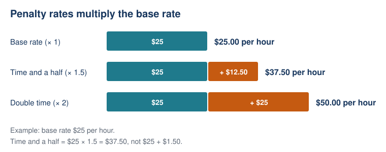
Lesson 3 · Gross to take-home pay
- gross pay Pay before any tax is taken out
- net pay (take-home pay) Pay left after tax and other deductions are taken out
- fortnight Two weeks
- PAYG withholding Pay As You Go: the employer takes some tax out of each pay and sends it to the ATO
- tax withheld The amount of tax taken out of one pay
- tax-free threshold For most Australian residents, the first $18,200 of yearly income, on which no income tax is paid. Claiming it means less tax is taken out of each pay
- annual leave Paid time off work. Full-time and part-time employees get 4 weeks a year, but casual employees do not
- leave loading An extra payment during annual leave, worked out as a percentage of normal pay (17.5% in the General Retail Industry Award)
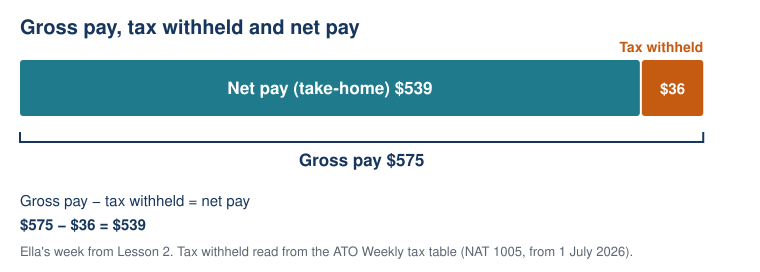
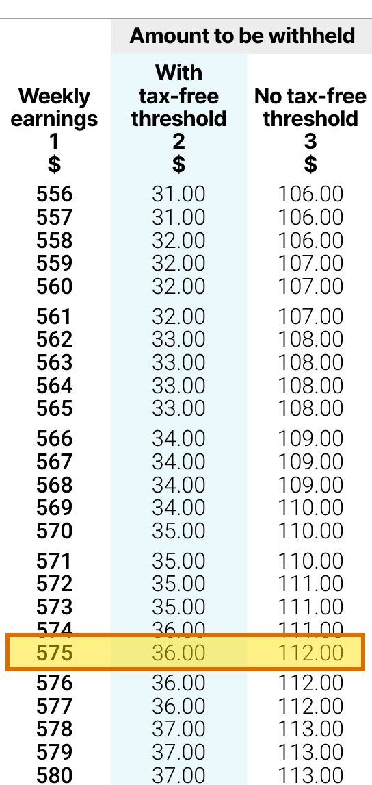
Photo credits:
- Tax table: extract from NAT 1005 (Australian Taxation Office, 2026a), with the $575 row highlighted. The ATO allows its material to be copied and adapted.
- annual leave: "Sun loungers" by Ed.ward, CC BY-SA 2.0. https://www.flickr.com/photos/44423341@N00/5478649673
Simple interest (Lessons 4–6)
Lesson 4 · The simple interest formula
- principal (P) The original amount invested. For Ella, P = $1000.
- simple interest (I) Interest calculated on the original principal for the whole stated period.
- interest rate (r) Interest per period as a proportion of the principal. 5% p.a. is r = 0.05 per year.
- per annum (p.a.) Per year. Match n to years when the rate is annual.
- time (n) The number of periods for the quoted rate. With an annual rate, 18 months is n = 1.5 years.
- total amount (A) The principal plus accumulated interest: A = P + I.
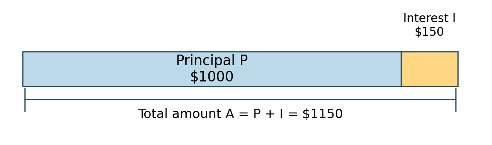
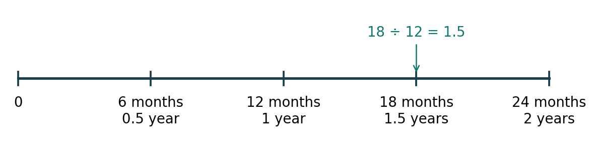
Lesson 5 · Applying simple interest
- unknown quantity A value not yet given, such as r or n.
- substitute Replace a symbol with its known value, using compatible units.
- inverse operation An operation that undoes another. Division undoes multiplication.
- verify Substitute the solution into the original rule to check it gives the stated interest.
- coordinate (n, A) An ordered pair giving time first and total amount second.
- linear relationship A relationship with a constant change in amount for equal changes in time. Its graph is a straight line.
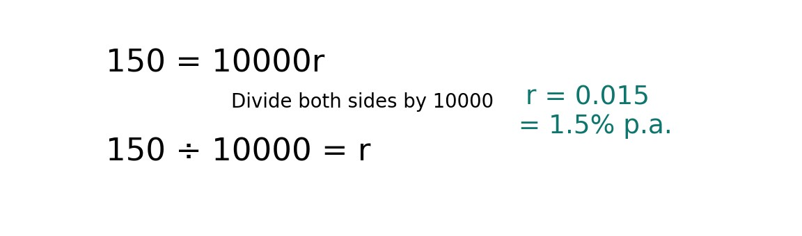
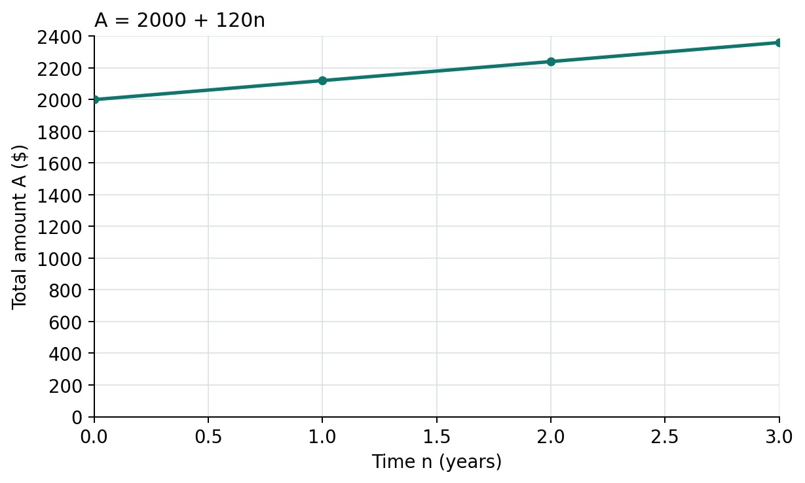
Lesson 6 · Tables and graphs
- initial value The amount when n = 0. For an amount graph, it is the principal P.
- gradient / rate of change Change in amount divided by change in time. With n in years, the unit is dollars per year.
- linear The amount changes by equal increments for equal time intervals, so the graph is a straight line.
- coefficient of n The number multiplying n. In A = 2000 + 120n, 120 is the yearly dollar increase Pr.
- representation A way to show a relationship, such as a rule, table or graph.
- annual percentage rate The yearly interest as a percentage of the principal. It differs from the dollar increase Pr.
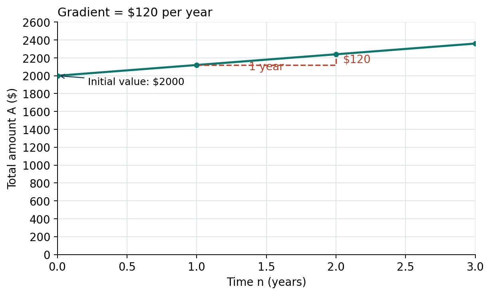
Spending money (Lessons 7–9)
Lesson 7 · Paying over time
- cash price Price paid for the item outright.
- deposit Initial amount paid before the later repayments.
- instalment / repayment One scheduled payment.
- duration How long the payment plan lasts.
- repayment total Sum of the scheduled repayments, excluding the initial deposit in these offers.
- total paid Deposit plus all repayments and any separately stated charges.
- additional cost Total paid minus cash price.
- affordability Whether a person can meet payments while covering other needs and commitments.
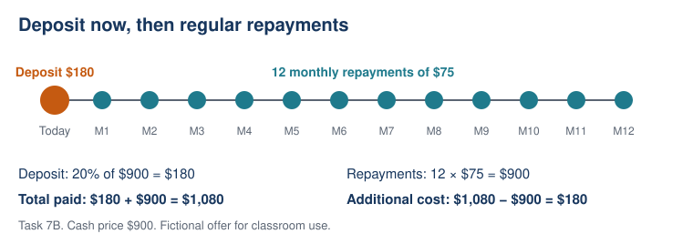
Lesson 8 · Buy now, pay later
- BNPL A payment arrangement that divides a purchase into scheduled payments.
- interest-free No interest is charged under the stated conditions; other charges may still apply.
- account charge A separately stated charge for the payment arrangement.
- late fee An additional charge when a specified payment is late.
- payment schedule The dates and amounts of required payments.
- conditional total Total for a stated scenario, such as exactly one late payment.
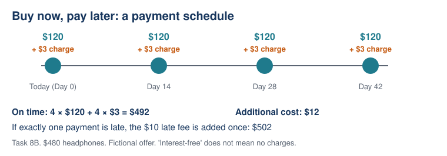
Lesson 9 · Short-term loans
- principal Original amount borrowed in these offers.
- establishment fee One-off charge for setting up the loan.
- fee basis The amount on which a percentage fee is calculated.
- loan term Time over which the loan is repaid.
- total repaid All payments returned to the lender, including stated charges.
- borrowing cost Total repaid minus the amount borrowed.
- repayment ceiling A stated maximum payment; it does not by itself establish affordability.
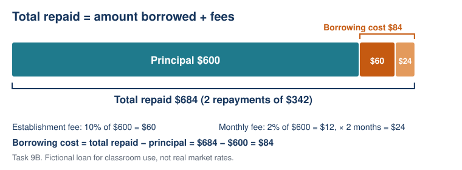